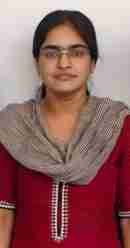

Industry
Software Engineering
Worked as a Software Engineer at Sigma MicroSystems Pvt. Ltd. on the RDC (Radar Data Converter) project for client RCI.
I’m Harika Bandaru, a Computer Science professional with experience in software engineering and higher education. I enjoy connecting programming fundamentals with practical technology and student learning.
Explore my experience ↗Get in touch
A career spanning software development and teaching, with a foundation in Computer Science and hands-on experience with systems-level technologies.
Worked as a Software Engineer at Sigma MicroSystems Pvt. Ltd. on the RDC (Radar Data Converter) project for client RCI.
Worked as an Assistant Professor at Ellenki College of Engineering and currently at Nalla Malla Reddy College of Engineering, as stated in the supplied résumé.
Employment dates were not included in the supplied résumé, so roles are listed without estimated timelines.
Currently working as an Assistant Professor.
Previously worked as an Assistant Professor, teaching Computer Science subjects.
Worked on RDC (Radar Data Converter), described as converting radar signals to digital form and synchronising with other systems. Client: RCI. Project team: 10; module team: 4.
A software engineering project from Harika’s industry experience.
Organization: Sigma MicroSystems Pvt. Ltd.
Role: Software Engineer
Project team: 10 · Module team: 4
Languages: C, C++
Database: Oracle
Tools: KDE
Operating system: Linux
Technical skills and subjects listed in the supplied résumé.
Postgraduate and undergraduate qualifications in Computer Science.
Ellenki College of Engineering, Hyderabad
JNTU affiliated
SVIT, Mahabubnagar
JNTU affiliated
For professional enquiries, academic collaboration, and software opportunities.
Hyderabad, India
Professional correspondence